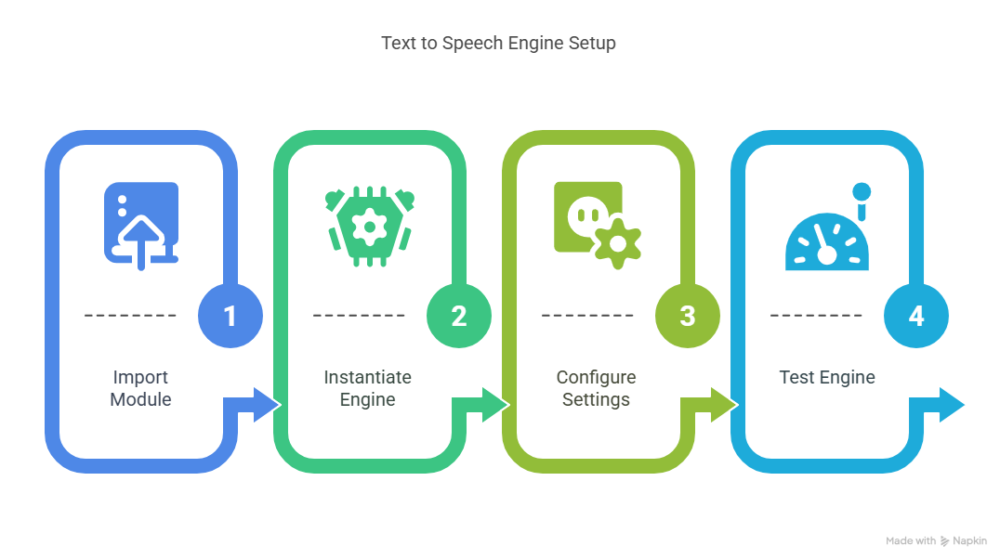
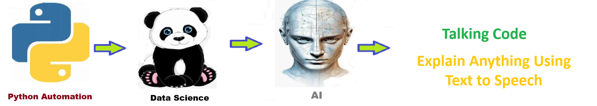

This data science solution will establish a text to speech engine. The text to speech engine will allow you to have your code talk to the users. it will make your code easier to understand and use.
The pyttsx3 library is a text-to-speech conversion library in Python that works offline and is compatible with both Python 2 and 3. It allows developers to convert text data into spoken words using various speech engines, such as SAPI5 on Windows, NSSpeechSynthesizer on macOS, and espeak on Linux. This library is commonly used for creating applications that require vocal output, such as accessibility tools, voice assistants, and educational software.
The goal of this solution is to Jump Start your development and have you up and running in 30 minutes.
To get started with the Talking Code solution repository, follow these steps: 1. Clone the repository to your local machine. 2. Install the required dependencies listed at the top of the notebook. 3. Explore the example code provided in the repository and experiment. 4. Run the notebook and make it your own - EASY !
These features are designed to provide everything you need for Talking Code
